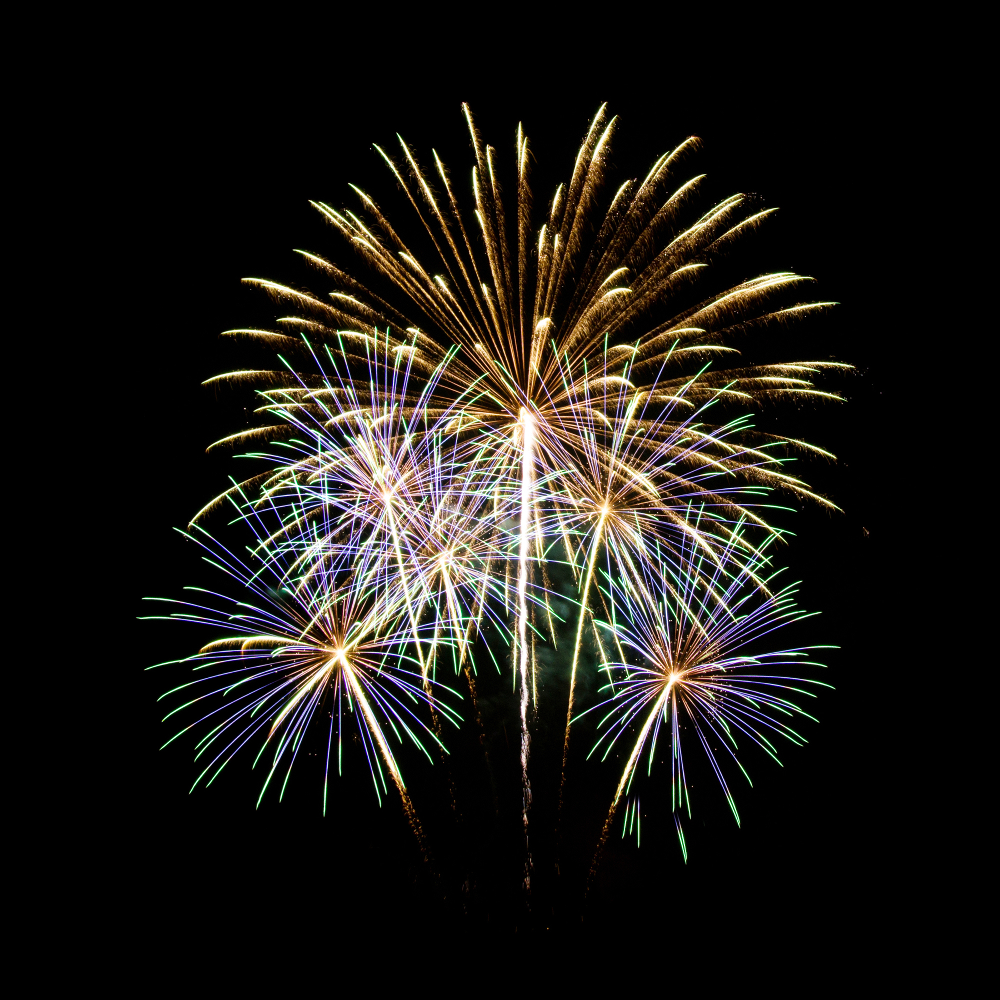
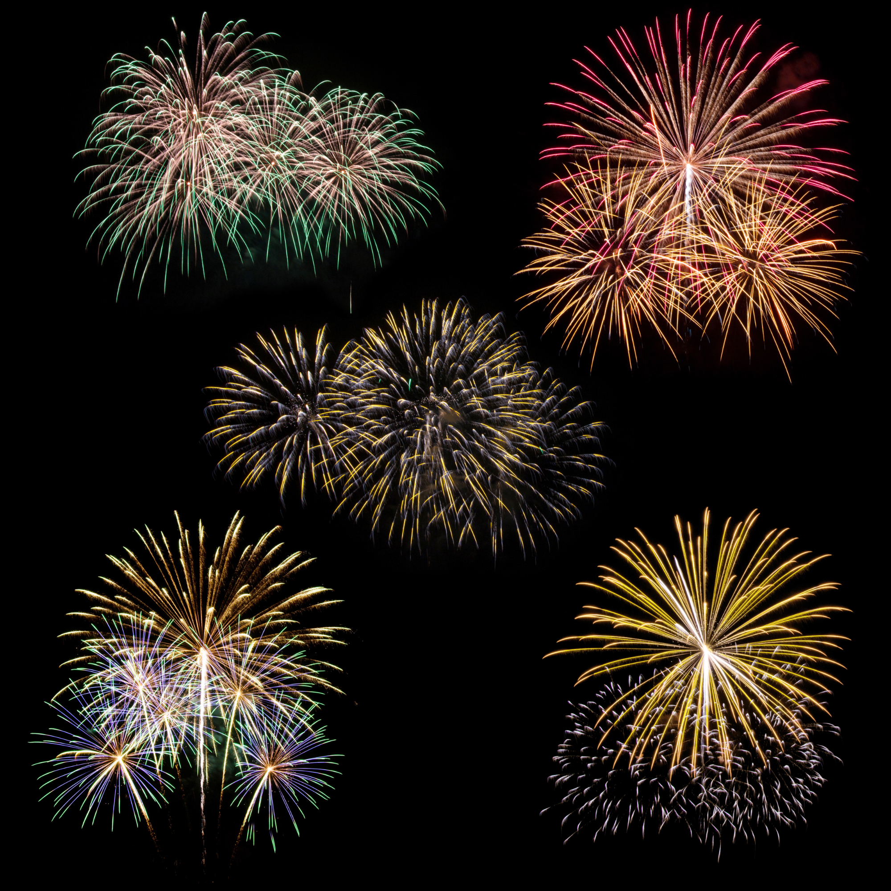
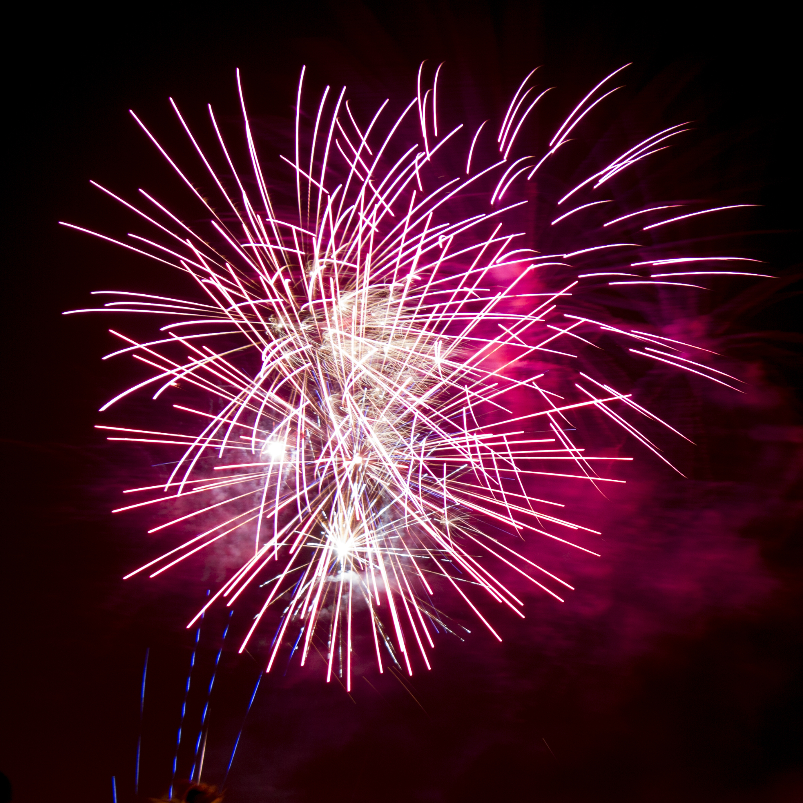
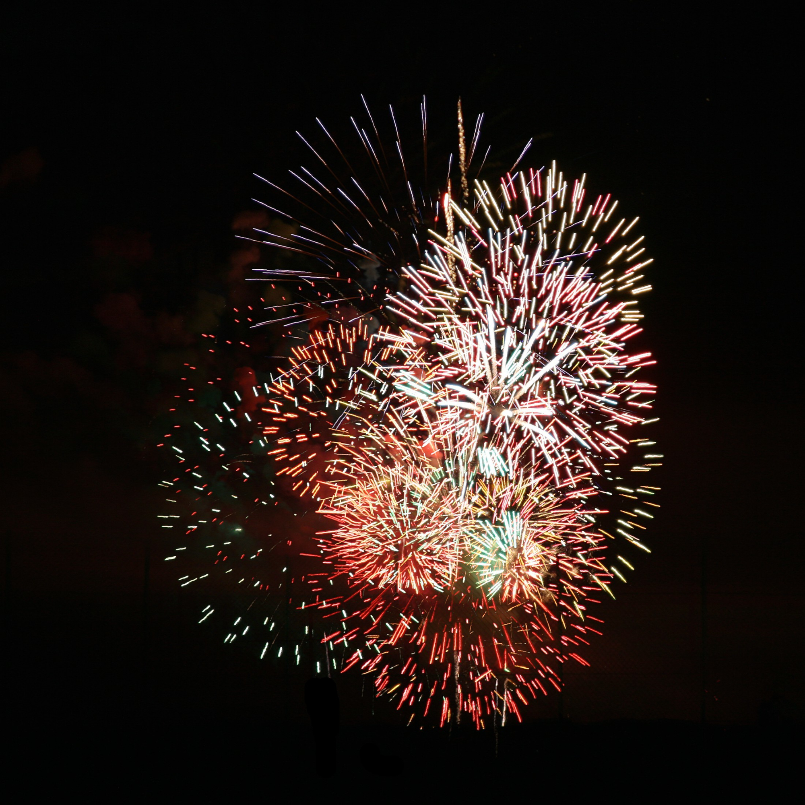

Fireworks are vibrant explosions of light and color, celebrating joy and special occasions.
| Fireworks have long been a captivating element of celebrations, symbolizing joy, festivity, and awe. Their vibrant displays of color and light illuminate the night sky, creating a magical ambiance that captures the attention of people of all ages. From cultural festivals to national holidays, fireworks bring communities together, fostering a sense of unity and shared excitement. The mesmerizing patterns, combined with the dramatic sounds of bursts and crackles, create a sensory experience that leaves a lasting impression on spectators. |  | The emotional impact of fireworks is profound, often evoking feelings of wonder and happiness. Watching fireworks triggers a sense of nostalgia for many, reminding them of cherished moments from childhood or previous celebrations. This emotional connection enhances their popularity, as people associate these dazzling displays with positive memories and significant milestones. Additionally, the anticipation and excitement leading up to a fireworks show add to the overall experience, heightening the sense of celebration. |  |
| However, the impact of fireworks extends beyond their visual appeal, influencing mental and emotional well-being. For some, the loud sounds and sudden flashes can be overwhelming, particularly for individuals with sensory sensitivities, such as those on the autism spectrum, or for veterans with PTSD. The unpredictability of the explosions can induce stress or anxiety, highlighting the need for mindful planning and accessible alternatives during large-scale events. Silent fireworks, which produce less noise, have been introduced in some regions to address these concerns. |  | Fireworks also have a significant effect on pets and wildlife. Many animals are sensitive to loud noises and bright lights, leading to fear, disorientation, and stress during fireworks displays. Pet owners often take precautions to ensure their pets feel safe, such as creating quiet spaces or using calming techniques. For wildlife, sudden noises can disrupt habitats and natural behaviors, prompting environmentalists to advocate for more eco-friendly and wildlife-conscious alternatives. |  |
| Beyond their emotional and ecological effects, fireworks contribute to economic activity, particularly in the tourism and entertainment sectors. Festivals and events featuring fireworks attract large crowds, boosting local businesses and generating revenue. The artistry and craftsmanship involved in creating intricate firework displays also highlight cultural traditions and innovation, as each show is designed to tell a unique story through patterns, colors, and choreography. |
|
In conclusion, fireworks are a powerful symbol of celebration and unity, creating memorable experiences for millions of people. However, their impact is multifaceted, influencing emotional well-being, animal behavior, and the environment. By embracing sustainable and inclusive practices, society can continue to enjoy the beauty of fireworks while minimizing their adverse effects, ensuring they remain a cherished tradition for generations to come. |
|